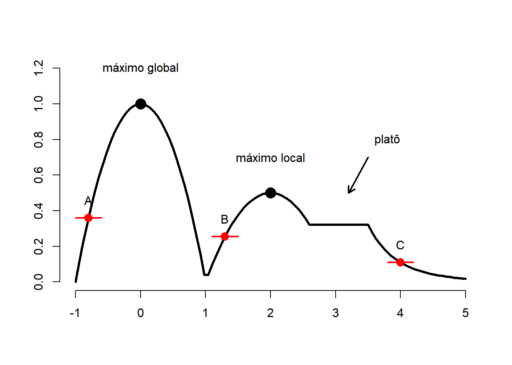

url <- 'https://docs.google.com/spreadsheets/d/1mEpPFyVaU3DjwYvWGhZDS_0EsESLRERSed475P-_29U/edit?usp=sharing'
require(gsheet)Carregando pacotes exigidos: gsheetWarning: package 'gsheet' was built under R version 4.3.2dados <- gsheet2tbl(url)A palavra estimar possui vários significados na língua portuguesa. Em um de seus verbetes, estimar significa apreciação ou avaliação. Neste sentido, a estimação pontual refere-se a um conjunto de técnicas para encontrar uma estatística para avaliar alguma característica da população.
Definição Estimador é uma estatística criada com o objetivo de estimar os parâmetros populacionais. Seu valor observado é denominado estimativa.
Por ser uma estatística, o estimador possui uma distribuição amostral. Considerando seu objetivo primário de estimar \(\theta\), é natural que o estimador produza estimativas próximas deste valor.
Seja \(T\) um estimador para \(\theta\). Definimos o erro quadrático médio por
\[EQM_T(\theta)=E(T-\theta)^2.\] Quanto menor for o erro quadrático médio, maior é a capacidade do estimador produzir, em média, estimativas próximas de \(\theta\). Pode-se notar que
\[\begin{align}EQM_T(\theta)&=E\left(T-E(T)+E(T)-\theta\right)^2\\&=E\left( (T-E(T))^2+(E(T)-\theta)^2- (T-E(T))(E(T)-\theta)\right)\\&=Var(T)+(E(T)-\theta)^2\\&=SE(T)^2+\hbox{Vício}_T(\theta)^2.\end{align}\] onde \[\hbox{Vício}_T(\theta)=E(T)-\theta\] e \[SE(T)=\sqrt{Var(T)}.\]
Vamos analisar as parcelas dessa decomposição em separado. O termo \(E(T)-\theta\) é denominado vício (do estimador). - Se o vício é nulo, o estimador é dito ser não viciado. - Se o vício é positivo, o estimador tende a superestimar \(\theta\). - Se o vício é negativo, o estimador tende a subestimar \(\theta\). O termo \(SE(T)\) é denominado erro padrão (standard error) e é uma medida de acurácia do estimador.
Nota. O erro quadrático médio é utilizado para comparar estimadores. Já o erro padrão é uma importante medida que precisa ser reportada junto com a estimativa pontual.
Exemplo. Seja \(X_1,\ldots,X_n\) uma amostra aleatória de um membro da família de distribuições com variância finita. Sejam \(E(X)=\mu\) e \(\sigma^2=Var(X)\). Considere o estimador \(\bar{X}_n\) para \(\mu\). Como a família não é paramétrica, não sabemos a distribuição amostral de \(\bar{X}_n\). Contudo, tem-se que \[E(\bar{X}_n)=E\left(\frac{1}{n}\sum_{i=1}^n X_i\right)=\frac{1}{n}\sum_{i=1}^nE(X_i)=E(X)=\mu\] logo, o estimador \(\bar{X}_n\) é não viciado para \(\mu\). Além disso, \[Var(\bar{X}_n)=Var\left(\frac{1}{n}\sum_{i=1}^{n}X_i\right)=\frac{1}{n^2}\sum_{i=1}^n Var(X_i)=\frac{\sigma^2}{n}\] logo, o erro quadrático de \(\bar{X}\) é \[EQM_{\bar{X}_n}(\mu)=\frac{\sigma^2}{n}.\] Observe que esse erro quadrático médio é inversamente proporcional ao tamanho da amostra. Portanto, quanto maior o tamanho da amostra, mais próximas de \(\mu\) estarão as estimativas produzidas por \(\bar{X}_n\).
O erro padrão é dado por \[SE(\bar{X}_n)=\frac{\sigma}{\sqrt{n}},\] mas só pode ser reportado se \(\sigma\) for conhecido. É possível mostrar que, sob as mesmas condições, o estimador \[S^2=\frac{1}{n-1}\sum_{i=1}^n (X_i-\bar{X}_n)^2\] é não viciado para \(\sigma^2\).
No exemplo acima, vimos que o erro quadrático médio de \(\bar{X}_n\) tende a zero na medida que aumentamos o tamanho da amostra. Estimadores com essa característica são denominados consistentes.
Uma sequência \(T_n=T_n(X_1,\ldots,X_n)\) de estimadores para \(\theta\) é consistente se, para qualquer \(\varepsilon>0\) e \(\theta\in\Theta\), \[\lim_{n\rightarrow\infty} P(|T_n-\theta|<\varepsilon)=1.\]
Intuitivamente, quanto maior é o tamanho da amostra, maior é a probabilidade do estimador estar arbitrariamente próximo de \(\theta\). O resultado abaixo relaciona a consistência com o erro quadrático médio.
Proposição. Seja \(T_n=T(X_1,\ldots,X_n)\) uma sequência de estimadores. Se, para todo \(\theta\), \[\lim_{n\rightarrow\infty}EQM_{T_n}(\theta)=0,\] então \(T_n\) é consistente.
Exemplo. Considere uma amostra aleatória de uma população com variância finita. Mostramos anteriormente que \[EQM_{\bar{X}_n}(\mu)=\frac{\sigma}{n}.\] Como \[\lim_{n\rightarrow\infty}\frac{\sigma}{n}=0,\] temos que \(\bar{X}_n\) é um estimador consistente.
Discutimos anteriormente que as características de interesse presentes na população são funções dos parâmetros populacionais. Ao se obter uma estimativa para \(\theta\), é natural que essa estimativa seja utilizadas para estimar qualquer função de \(\theta\).
Princípio da substituição. Seja \(T\) uma estimador para \(\theta\). Então, para qualquer função real \(g(.)\), \(g(T)\) será um estimador para \(g(\theta)\).
Exemplo Considere novamente uma amostra aleatória de um membro da família de distribuições com variância finita. Vimos que \(S^2_n\) é um estimador não viciado para \(Var(X)=\sigma^2\). Então, pelo princípio da substituição, \[S_n=\sqrt{S^2_n}\] é um estimador para \(\sigma\). Também vimos que \(\bar{X}_n\) é um estimador para \(\mu=E(X)\) e que seu erro padrão é \[SE(\bar{X}_n)=\frac{\sigma}{\sqrt{n}}.\] Logo, um estimador para erro padrão de \(\bar{X}_n\) é
\[\widehat{SE}(\bar{X}_n)(\mu)=\frac{S_n}{\sqrt{n}}.\]
Exemplo. Foram coletados o peso em gramas de 100 bebês recém-nascidos no estado do Amazonas em 2010. A estimativa obtida para a média foi \(\bar{x}=3.226,85 g\). O desvio padrão amostral foi 474,556. Logo, o erro padrão estimado para a média foi
\[\hat{SE}(\bar{X}_n)=\frac{474,556g}{\sqrt{100}}=47,4556g.\] Portanto, a estimativa possui um erro de 47,4556\(g\). É usual escrever \(3.226,85g\pm47,4556g\).
Isso implica que há evidências de que nossa estimativa está correta na casa das unidades de milhar, mas pode conter erros nas casas anteriores. A estratégia para diminuir o erro padrão é aumentar o tamanho da amostra.
Seja \(T\) um estimador para \(\theta\) e considere novamente o problema de estimar \(g(\theta)\). O valor da função \(g(.)\) quando \(t\) está na vizinhança de \(\theta\) pode ser aproximado por \[g(t)\approx g(\theta)+(t-\theta)g'(\theta),\] onde \(g'\) é derivada de \(g\). Observe que \[g(t)-g(\theta)\approx (t-\theta)g'(\theta),\] logo \[\underbrace{E\left(g(T_n)-g(\theta)\right)^2}_{EQM_{g(T_n)}(g(\theta))}\approx \underbrace{E\left(T-\theta\right)^2}_{EQM_{T_n}(\theta)} [g'(\theta)]^2\]
Portanto, se \(T_n\) for consistente, então \(g(T_n)\) também será consistente. Além disso, pode-se mostrar que
\[\underbrace{E(g(T_n))-g(\theta)}_{\hbox{Vício}_{g(T_n)}(g(\theta))}\approx \underbrace{(E(T_n )-\theta)}_{\hbox{Vício}_{T_n}(\theta)}g'(\theta),\] e, se \(T_n\) é não viciado, teremos que \(g(T_n)\) será aproximadamente não viciado. Além disso,
Importante. A aproximação \[g(t)-g(\theta)\approx (t-\theta)g'(\theta)\] é razoável apenas quando \(t\) está na vizinhança de \(\theta\). Para que os resultados utilizando esperança e variância sejam razoáveis, é necessário que a distribuição amostral de \(T_n\) esteja bem concentrada em torno de \(\theta\), o que é obtido na prática com um tamanho grande de amostra, desde que \(T_n\) seja consistente.
O \(k\)-ésimo momento da população é definido por \(\mu_k=E(X^k)\). Defina o \(k\)-ésimo momento amostral por \[\hat{\mu}_k=\frac{1}{n}\sum_{i=1}^n X_i^k\] Observe que, ao fazer \(X_i^k=Y_i\), teremos que \(\hat{\mu}_k=\bar{Y}_n\). Isso nos permite provar que:
Além disso, para \(n\) suficientemente grande, pelo Teorema Central do Limite \[\hat{\mu}_k\approx \hbox{Normal}\left(\mu_k,\frac{Var(X^k)}{n}\right)\]
Exemplo Seja \(X_1,\ldots,X_n\) uma amostra aleatória da população Poisson(\(\lambda\)). Sabemos que o primeiro momento populacional é \(E(X)=\lambda\). Logo, a média amostral é um estimador não viciado e consistente para \(\lambda\). Além disso, como \[Var(X)=\lambda,\] para \(n\) suficientemente grande,
\[\bar{X}\approx \hbox{Normal}\left(\lambda,\frac{\lambda}{n}\right).\] Note que é possível trabalhar com a distribuição exata de \(\bar{X}_n\), uma vez que \[\sum_{i=1}^n X_i\sim\hbox{Poisson}(n\lambda)\] e \[P(\bar{X}_n=\bar{x}|\lambda)=P\left(\left.\sum_{i=1}^n X_i=n\bar{x}\right|\lambda\right).\]
Considere uma amostra aleatória de uma população com parâmetros \(\theta_1,\ldots,\theta_k\). Suponha que os \(k\) primeiros momentos podem ser escritos como função dos parâmetros, ou seja, existem funções \(g_j(.)\), \(j=1,\ldots,k\) tais que \[\mu_k=g_j(\theta_1,\ldots,\theta_k).\] Suponha ainda que existem funções \(h_j(.)\), \(j=1,\ldots,k\), tais que \[\theta_j=h_j(\mu_1,\ldots,\mu_k).\] O método dos momentos consiste em encontrar os estimadores \(\hat{\theta}_1,\ldots,\hat{\theta}_k\) computando \[\hat{\theta}_j=h_j(\hat{\mu}_1,\ldots,\hat{\mu}_k).\]
Em outras palavras, o método dos momentos consiste em utilizar os momentos amostrais e aplicar o princípio da substituição para obter estimativas dos parâmetros. Como os momentos amostrais são não viciados e consistentes, podemos obter as seguintes propriedades:
Além disso, a distribuição amostral dos estimadores de momentos é aproximadamente normal. Quando há apenas um parâmetro, essa aproximação é dada por
\[\hat{\theta}\approx \hbox{Normal}\left( \theta_j,\frac{Var(X)}{n}\left[\frac{d}{d\mu}h(\mu)\right]^2 \right).\]
Exemplo Seja \(X_1,\ldots,X_n\) uma amostra aleatória da população Exponencial(\(\theta\)). O primeiro momento amostral é \[\mu=E(X)=\frac{1}{\theta}=g(\theta).\] Podemos então escrever \(\theta\) como função do primeiro momento amostral: \[\theta=\frac{1}{\mu}=h(\mu)\] Logo, o estimador obtido via método dos momentos para \(\theta\) é \[\hat{\theta}=\frac{1}{\hat{\mu}}=\frac{1}{\bar{X}_n}.\] Como \[Var(X)=\frac{1}{\theta^2}\] e \[\frac{d}{d\mu}h(\mu)=-\frac{1}{\mu}^2=\left(\frac{1}{\mu}\right)^2=\theta^2,\] teremos que, para \(n\) suficientemente grande, sua distribuição amostral será \[\hat{\theta}\approx N\left(\theta,\frac{Var(X)}{n}h'(\mu)^2\right)=N\left(\theta,\frac{\theta^2}{n}\right)\]
Exemplo Seja \(X_1,\ldots,X_n\) uma amostra aleatória da população Geométrica(\(\theta\)). O primeiro momento amostral é \[\mu=E(X)=\frac{1-\theta}{\theta}=g(\theta).\] Podemos então escrever \(\theta\) como função do primeiro momento amostral: \[\theta=\frac{1}{1+\mu}=h(\mu)\] Logo, o estimador obtido via método dos momentos para \(\theta\) é \[\hat{\theta}=\frac{1}{1+\hat{\mu}}=\frac{1}{1+\bar{X}_n}.\] Como \[Var(X)=\frac{1-\theta}{\theta^2},\] e \[\frac{d}{d\mu}h(\mu)=-\frac{1}{(1+\mu)^2}=\left(\frac{1}{1+\mu}\right)^2=\theta^2,\] teremos que, para \(n\) suficientemente grande, sua distribuição amostral será \[\hat{\theta}\approx N\left(\theta,\frac{Var(X)}{n}h'(\mu)^2\right)=N\left(\theta,\frac{\theta^2(1-\theta)}{n}\right)\]
É possível encontrar a distribuição exata de \(\hat{\theta}\). Para tanto, lembremos que \[\sum_{i=1}^n X_i\sim \hbox{Binomial Negativa}(n,\theta),\] logo, \[\begin{align}P\left(\hat{\theta}=c|\theta\right)&=P\left(\left.\frac{1}{1+\bar{X}_n}=c\right|\theta\right)=P\left(\left.\bar{X}_n=\frac{1}{c}-1\right|\theta\right)\\&= P\left(\left.\sum_{i=1}^n X_i=n\left(\frac{1}{c}-1\right)\right|\theta\right). \end{align}\]
Exemplo. Seja \(X_1,\ldots,X_n\) uma amostra aleatória da distribuição Gama(\(\alpha,\beta\)). A esperança e a variância desse modelo são \[E(X)=\frac{\alpha}{\beta}\] e \[Var(X)=\frac{\alpha}{\beta^2}.\] Como \(E(X^2)=Var(X)+E(X)^2\), podemos deduzir que \[E(X^2)=\frac{\alpha^2+\alpha}{\beta^2}.\] Então, os dois primeiros momentos escritos como função de \(\alpha\) e \(\beta\) são \[\begin{align}\mu_1&=\frac{\alpha}{\beta^2}=g_1(\alpha,\beta),\\ \mu_2&=\frac{\alpha^2+\alpha}{\beta^2}=g_2(\alpha,\beta).\end{align}\] Podemos então escrever \(\alpha\) e \(\beta\) como função de \(\mu_1\) e \(\mu_2\): \[\begin{align}\alpha&=\frac{\mu_1^2}{\mu_2-\mu_1^2}=\frac{\mu_1^2}{Var(X)}=h_1(\mu_1,\mu_2),\\ \beta&=\frac{\mu_1}{\mu_2-\mu_1^2}=\frac{\mu_1}{Var(X)}=h_2(\mu_1,\mu_2).\end{align}\] Portanto os estimadores para \(\alpha\) e \(\beta\) obtidos via método dos momentos são: \[\begin{align}\hat{\alpha}&=\frac{\bar{X}_n^2}{S^2_n}=h_1(\mu_1,\mu_2),\\ \hat{\beta}&=\frac{\bar{X}_n}{S^2_n}=h_2(\mu_1,\mu_2).\end{align}.\]
Exemplo. Seja \(X_1,\ldots,X_n\) uma amostra aleatória da distribuição Beta(\(\alpha,\beta\)). A esperança e a variância desse modelo são \[E(X)=\frac{\alpha}{\alpha+\beta}\] e \[Var(X)=\frac{\alpha\beta}{(\alpha+\beta)^2(\alpha+\beta+1)}.\] Como \(E(X^2)=Var(X)+E(X)^2\), podemos deduzir que \[E(X^2)=\frac{\alpha^2}{(\alpha+\beta)^2}+\frac{\alpha\beta}{(\alpha+\beta)^2(\alpha+\beta+1)}.\] Então, os dois primeiros momentos escritos como função de \(\alpha\) e \(\beta\) são \[\begin{align}\mu_1&=\frac{\alpha}{\alpha+\beta}=g_1(\alpha,\beta),\\ \mu_2&=\frac{\alpha^2}{(\alpha+\beta)^2}+\frac{\alpha\beta}{(\alpha+\beta)^2(\alpha+\beta+1)}=g_2(\alpha,\beta).\end{align}\] Podemos então escrever \(\alpha\) e \(\beta\) como função de \(\mu_1\) e \(\mu_2\): \[\begin{align}\alpha&=\frac{\mu_1^2-\mu_1\mu_2}{\mu_2-\mu_1^2}=\mu_1\left(\frac{\mu_1(1-\mu_1)}{Var(X)}-1\right)=h_1(\mu_1,\mu_2),\\ \beta&=(1-\mu_1)\left(\frac{\mu_1(1-\mu_1)}{Var(X)}-1\right)=h_2(\mu_1,\mu_2).\end{align}\] Portanto os estimadores para \(\alpha\) e \(\beta\) obtidos via método dos momentos são: \[\begin{align}\hat{\alpha}&=\bar{X}_n\left(\frac{\bar{X}_n(1-\bar{X}_n)}{S_n^2}-1\right),\\ \hat{\beta}&=(1-\bar{X}_n)\left(\frac{\bar{X}_n(1-\bar{X}_n)}{S_n^2}-1\right).\end{align}\]
Para o caso de \(q\) parâmetros, é possível mostrar que a distribuição aproximada dos estimadores de momentos é
\[\hat{\theta}_j\approx \hbox{Normal}\left(\theta_j,\frac{1}{n}\sum_{r=1}^k\sum_{s=1}^k\sigma_{r,s}\frac{\partial}{\partial\mu_r}h_j\frac{\partial}{\partial\mu_s}h_j\right),\] onde \[\sigma_{r,s}=Cov(X^r,X^s).\]
Seja \(X_1,\ldots,X_n\) uma amostra alestória da população, cuja função distribuição, denotada por \(F\), é desconhecida. Nesse caso, \(F\) pertence à classe de todas as funções de distribuição.
Definição. A função de distribuição empírica (FDE) é definida por \[\hat{F}_{n}(x)=\frac{1}{n}\sum_{i=1}^n I(X_i\leq x).\]
Observe que a função de distribuição empírica é uma estatística, cuja distribuição empírica se altera para cada valor de \(x\) fixado. É importante notar que \(x\) é o argumento da função e não está relacionado com a amostra observada. O valor observado dessa estatística, para \(x\) fixado, recebe a mesma notação:
\[\hat{F}_{n}(x)=\frac{1}{n}\sum_{i=1}^n I(x_i\leq x).\] Nos textos básicos de estatística, \(\hat{F}_n(x)\) é comumente denominada função de distribuição acumulada.
Observe que
\[E(\hat{F}_{n}(x))=\frac{1}{n}\sum_{i=1}^n E(I(X_i\leq x))=E(I(X\leq x))=0.P(X>x)+1.P(X\leq 1)=F(x),\] logo, a função de distribuição empírica é um estimador não viciado para a população. Além disso,
\[\begin{align}Var(\hat{F}_{n}(x))&=\frac{1}{n^2}\sum_{i=1}^n Var(I(X_i\leq x))=\frac{1}{n}Var(I(X\leq x))\\&=\frac{1}{n}\left[(0-F(x))^2.P(X>x)+(1-F(x))^2.P(X\leq x)\right]\\&=\frac{1}{n}\left[F(x)^2(1-F(x))+F(x)+F(x)^3-2F(x)^2\right]\\&=\frac{1}{n}\left[F(x)-F(x)^2\right]=\frac{1}{n}F(x)(1-F(x)),\end{align}\] portanto, para qualquer valor de \(x\) fixado, \[\lim_{n\rightarrow\infty }EQM_{\hat{F}_n}(F)=0,\] e \(\hat{F}_n\) é um estimador consistente.
A função de distribuição empírica é equivalente a função de distribuição obtida quando consideramos que cada ponto de uma amostra observada de tamanho \(n\) possui probabilidade \(1/n\).
Exemplo. O banco de dados abaixo possui o peso, em gramas, de 37.439 bebês nascidos no Amazonas em 2010 com mais de 47 semanas de gestação.
url <- 'https://docs.google.com/spreadsheets/d/1mEpPFyVaU3DjwYvWGhZDS_0EsESLRERSed475P-_29U/edit?usp=sharing'
require(gsheet)Carregando pacotes exigidos: gsheetWarning: package 'gsheet' was built under R version 4.3.2dados <- gsheet2tbl(url)O comando ecdf retorna a função de distribuição empírica da amostra. Abaixo, mostramos o gráfico dessa função estimada.
Fn <- ecdf(dados$PESO)
plot( Fn, main = ' ', xlab = 'Peso')
Observe na figura acima o típico formato em S esperado pela função de distribuição da distribuição normal. Assumindo que os dados são provenientes de uma população normal, podemos utilizar o princípio da substituição e estimar sua função por \[\tilde{F}_n(x)=\int_{-\infty}^x \frac{1}{\sqrt{2\pi s_n^2}}e^{-\frac{1}{2s_n^2}(x-\bar{x})^2}.\] Portanto, temos duas estimativas para a função de distribuição. Comparar as duas é a base dos testes de bondade de ajuste. Se as duas diferem, temos evidências de que o modelo paramétrico escolhido não é adequado. A figura abaixo faz o gráfico de \(\hat{F}_n\) e \(\tilde{F}_n\), monstrando que há evidências de que os dados são provenientes de uma população normal.
Fn <- ecdf(dados$PESO)
Ftil <- function(x) pnorm(x, mean(dados$PESO), sd(dados$PESO))
plot( Fn, main = ' ', xlab = 'Peso', lwd = 2, col ='darkorange4')
curve(Ftil(x), add=T, col ='seagreen', lwd = 2)
Seja \(X_1,\ldots,X_n\) uma amostra aleatória e seja \(T\) uma estatística. Sabemos que o erro padrão de \(T\) é uma importante da qualidade de \(T\). Entretando, nem sempre é trivial obter uma estimativa para o erro padrão.
Suponha que é possível repetir esse experimento \(B\) vezes e seja \(t_i\) o valor observado da estatística na \(i\)-ésima repetição. Então, o erro padrão poderia ser facilmente estimado por
\[\widehat{SE}(T)=\sqrt{\frac{1}{B-1}\sum_{i=1}^B(t_i-\bar{t})^2},\] onde \(\bar{t}\) é a média amostral de \(t_1,\ldots,t_B\).
Em geral não é possível repetir o experimento várias vezes. Em vez disso, podemos simular novas amostras considerando que a verdadeira distribuição é \(\hat{F}_n(.)\). Cada amostra aleatória simulada é obtida via amostragem aleatória simples com reposição considerando a amostra original. O cálculo do erro padrão utilizando os valores de \(t\) obtidos deste modo é denominado bootstrap
Algoritmo: Metodo bootstrap
Seja \(x_1,\ldots,x_n\) a amostra observada. Para \(i=1,\ldots,B\)
Passo \(i\): colete \(x_1^*,\ldots,x_n^*\) utilizando uma amostragem aleatória simples com reposição de \(x_1,\ldots,x_n\). Calcule \(t_i=T(x_1^*,\ldots,x_n^*)\)
Calcule
\[\widehat{SE}(T)=\sqrt{\frac{1}{B-1}\sum_{i=1}^B(t_i-\bar{t})^2}\]
Exemplo. Considere o seguinte subconjunto da amostra utilizada no exemplo anterior:
amostra <- dados$PESO[1:30]
amostra [1] 3230 3960 3070 3670 3770 3135 3095 3085 3095 3405 3575 2600 3645 3255 3140
[16] 3070 2970 2650 3195 3450 3125 3130 3370 2960 2945 2965 2795 3195 3680 2825Podemos obter uma amostra da função de distribuição empírica sorteando 30 dos números acima ao acaso com reposição
sorteio <- sample(amostra, 30, T)
sorteio [1] 3085 3195 2795 2795 3230 3195 3095 3070 3370 2960 3770 3370 2825 2945 3370
[16] 3195 3140 3405 3070 3140 2970 3960 3450 3575 3450 2970 2795 3085 3370 3450Vamos calcular o erro padrão de \(\bar{X}_{30}\) utilizano do método bootstrap:
t <- NULL
B <- 10000
for( i in 1:B){
sorteio <- sample(amostra, 30, T)
t[i] <- mean(sorteio)
}
# erro padrão
sd(t)[1] 58.7555Compare esse valor com o erro padrão estimado por \(S_n/\sqrt{30}\):
sd(amostra)/sqrt(30)[1] 59.83766Seja \(f(.)\) uma função real. Dizemos que \(x^*\) é um ponto de máximo global se, para todo \(x\) no domínio de \(f\), \[f(x)\leq f(x^*).\]
Exemplo. Seja \[f(x)= -x^2.\] Quando \(x=0\), teremos que \(f(0)=0\). Para qualquer outro valor de \(x\), teremos \(f(x)<0\). Portanto, \[f(x)\leq f(0)\] e \(x^*=0\) é o ponto de máximo.
Exemplo. Seja \[f(x)= I(0\leq x \leq 2).\]
Quando \(x\notin[0,2]\), teremos que \(f(x)=0\). Para qualquer valor de \(x\in[0,2]\), teremos \(f(x)=1\). Portanto, \[f(x)\leq f(x^*)\] onde \(x^*\) é qualquer ponto dentro do intervalo \([0,1]\). Nesse caso, existem infinitos pontos de máximo.
Exemplo. Seja
\[f(x)= xI(0\leq x < 2).\]
Quando \(x\notin[0,2)\), teremos que \(f(x)=0\). Para qualquer valor de \(x\in[0,2)\), teremos \(f(x)=x\).
Sabemos que, quanto mais próximo de 2, maior é o valor de \(x\). Entretanto, como \(f(2)=0\), temos que o máximo não está definido.
Quando \(f(x)\) é contínua, podemos procurar numericamente pelo ponto de máximo utilizando um algoritmo de subida de montanha.
Algoritmo de subida de montanha
Seja \(f(x)\) uma função contínua no domínio \(D\subseteq \mathbb{R}\). Escolha um valor \(m^{(1)}\) como candidato a ponto máximo. Fixe \(\delta>0\) pequeno. Na \(j\)-ésima iteração
Compute \(f(m^{(j)}-\delta)\) e \(f(m^{(j)}+\delta)\).
Se \[f(m^{(j)})< f(m^{(j)}+\delta),\] então \(m^{(j)}\) não pode ser ponto de máximo. Crie um candidato novo \(m^{(j+1)}=m^{(j)}+\delta\).
Se \[f(m^{(j)})< f(m^{(j)}-\delta),\] então \(m^{(j)}\) não pode ser ponto de máximo. Crie um candidato novo \(m^{(j+1)}=m^{(j)}-\delta\).
Repita o algoritmo até encontrar um ponto de máximo.
A figura abaixo apresenta uma função com diferentes regiões que podem interferir na determinação do ponto de máximo global via um algoritmo de subida de montanha. Os pontos em vermelho são diferentes valores iniciais para o algoritmo e os respectivos extremos dos segmentos vermelhos indicam os valores \(m-\delta\) e \(m+\delta\) que serão testados. Observe que:
Ao começar em \(A\), o algoritmo encontra o ponto de máximo global.
Ao começar em \(B\), o algoritmo vai parar em um ponto de máximo local
Ao começar em \(C\), o algortimo vai parar em algum ponto do platô.

Definição Seja \(f\) uma função definida em \(D\subseteq \mathbb{R}\). Dizemos que \(x^{*}\) é um ponto de máximo local se, para algum \(B\subset D\), \[f(x)\leq f(x^{*}),\;\;\forall\;\;x\in B.\]
Por definição, todo máximo global também é um máximo local. Vamos discutir em quais condições é possível encontrar os pontos de máximo locais. Considere que \(f(x)\) é diferenciável para todo \(x\) e que sua derivada é contínua. Como \(f'(x)\) é o coeficiente angular da reta que passa tangente ao ponto \(x\), temos que \(x^*\) ponto que satisfaz \(f'(x^*)=0\) só pode ser um ponto de máximo (local), mínimo (local) ou ponto de inflexão (essas três possibilidades são denominadas pontos críticos). A figura abaixo ilustra essas três situações.

Para distinguir se o ponto crítico é um ponto de máximo local, devemos verificar a concavidade da função no ponto.
se \(f''(x^*)>0\), então a concavidade de \(f\) no ponto \(x^*\) é voltada para cima (no formato \(\cup\)). Então \(x^*\) é um ponto de mínimo local
se \(f''(x^*)<0\), então a concavidade de \(f\) no ponto \(x^*\) é voltada para baixo (no formato \(\cap\)). Então \(x^*\) é um ponto de máximo local
Portanto, desde que a função possua as duas derivadas contínuas, pode-se encontrar todos os pontos críticos e determinar o máximo global da função.
Importante. Em problemas de maximização, tanto analíticos quanto computacionais, é usual procupar pelo ponto de máximo global de \(f(x)\) na função \(\log f(x)\). Para entender o motivo, observe que
Se \(f(x)\leq f(x^*)\) para todo \(x\), então \(\log f(x)\leq \log f(x^*)\). Portanto, o ponto que maximiza \(f\) também maximiza \(\log f\) (e vice e versa)
Ao aplicar o logaritmo, produtos são transformados em somas e potências em multiplicaçõces. Desse modo, o cálculo das derivadas tendem a ser mais simples.
Exemplo. Seja \[f(x)=\frac{1}{\sqrt{2\pi}}e^{-\frac{x^2}{2}}\] Vamos encontrar o ponto de máximo global dessa função. Primeiro, observe que \[\log f(x)=\log\left(\frac{1}{\sqrt{2\pi}}\right)+\log\left(e^{-\frac{x^2}{2}}\right)=\log\left(\frac{1}{\sqrt{2\pi}}\right)-\frac{x^2}{2}\] A primeira derivada da função acima é \[\frac{d}{dx}\log f(x)=-x\] e o ponto crítico \(x^*\) é encontrado como segue: \[-x^*=0\Rightarrow x^*=0\]
A segunda derivada da função é \[\frac{d^2}{dx^2}\log f(x)=-1\] Como essa derivada sempre é negativa, ela também o será para \(x^*\). Portanto \(x^*\) é um ponto de máximo local. Como esse é o único ponto, ele também é o máximo global.
Exemplo. Seja \[f(x)=x^a(1-x)^b,\] onde \(x\in(0,1)\) e \(a,b>0\). Vamos encontrar o ponto de máximo global dessa função. Primeiro, observe que \[\log f(x)= a\log(x)+b\log(1-x)\] A primeira derivada da função acima é \[\frac{d}{dx}\log f(x)=\frac{a}{x}-\frac{b}{1-x}\] e o ponto crítico \(x^*\) é encontrado como segue: \[\frac{a}{x^*}-\frac{b}{1-x^*}=0\Rightarrow a(1-x^*)-bx^{*}=0\Rightarrow x^*=\frac{a}{a+b}\]
A segunda derivada da função é \[\frac{d^2}{dx^2}\log f(x)=-\frac{a}{x^2}-\frac{b}{(1-x)^2}.\] Como essa derivada sempre é negativa, ela também o será para \(x^*\). Portanto \(x^*\) é um ponto de máximo local. Como esse é o único ponto, ele também é o máximo global.
Observe que nem sempre teremos um ponto crítico, mas isso não implica na inexistência do ponto de máximo global. Entre os casos de interesse nesse curso, estão as funções monótonas em um intervalo.
Definição Dizemos que \(f(x)\) é monótona crescente no intervalo \(D\) se, para quaisquer \(x>y\in D\), \[f(x)<f(y).\] Por outro lado, se para quaisquer \(x>y\in D\) se observar a relação \[f(x)>f(y),\] então \(f(x)\) será dita ser monótona decrescente no intervalo \(D\).
Proposição.
Exemplo. Seja \[f(x)=\log(x)I(0<x\leq 4)\] Observe que \[\frac{d}{dx}f(x)=\frac{1}{x}I(0<x\leq 4).\] Observe que a derivada acima não pode ser nula no intervalo de interesse (\(D=(0,4]\)). Como ela é sempre positiva, a função \(f\) é monótona crescente. Como o maior valor possível em \(D\) é 4, teremo que \(x^*=4\) é o ponto de máximo global.
Exemplo. Seja \[f(x)=\frac{1}{x}I(x\geq 3)\] Observe que \[\frac{d}{dx}f(x)=-\frac{1}{x^2}I(x\geq 3).\] Observe que a derivada acima não pode ser nula no intervalo de interesse (\(D=[3,\infty)\)). Como ela é sempre negativa, a função \(f\) é monótona decrescente. Como o menor valor possível em \(D\) é 3, teremo que \(x^*=3\) é o ponto de máximo global.